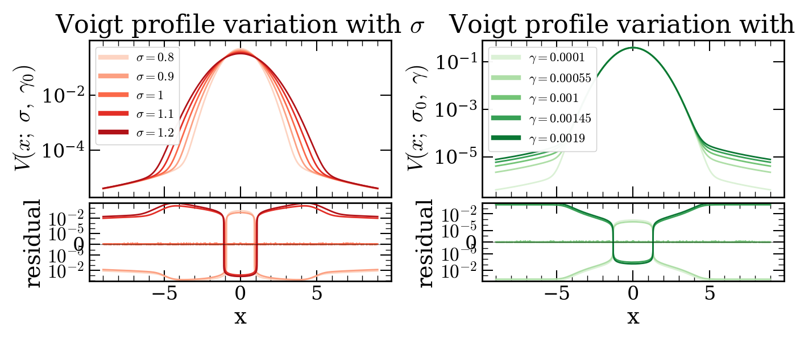
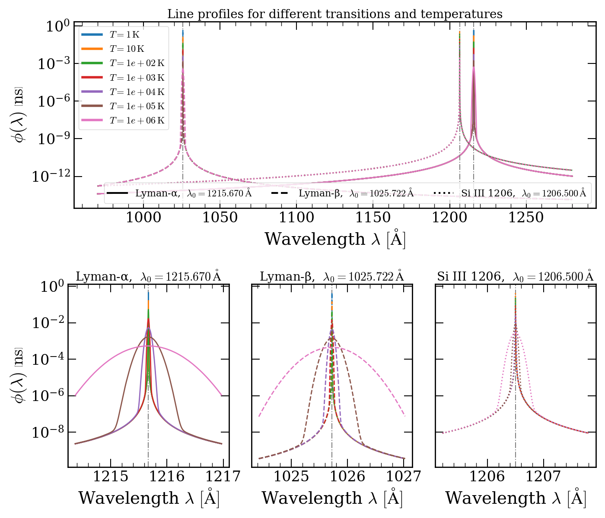

Section 3 • Transmitted Flux
3.3 Local Absorption Line Profile
We want to determine what is the line profile that would be observed by a reference frame (“obs”, see 3.2) associated with a gas source element located at \(\vec{x}\). We define the relative frequency with respect to a rest absorption wavelength \(\lambda_j\) as: \begin{align} \nu_j\left(\vec{x}, \Lambda\right) &= c\left(\frac{1}{\lambda'\left(\vec{x}, \Lambda\right)} - \frac{1}{\lambda_j}\right) \tag{3.15} \end{align}
Then, we can compute the line profile: \begin{align} \phi_{ij}\left(\vec{x}, \Lambda\right) = V\left(\nu_j\left(\vec{x}, \Lambda\right);\sigma_{ij}\left(\vec{x}\right),\gamma_j\left(\vec{x}\right)\right). \tag{3.16} \end{align}
Where \(V\) represents the Voigt function defined as (see Figure 3 for an example): \begin{align*} V(x;\sigma,\gamma) = \left( G\left(x';\; \sigma\right) * L\left(x';\; \gamma\right) \right)(x) \equiv \int_{-\infty}^{\infty} G(x';\sigma)\,L(x-x';\gamma)\,\mathrm{d}x' = \frac{\Re\!\big[\mathcal{W}(z)\big]}{\sqrt{2\pi}\,\sigma}, \quad z=\frac{x+i\gamma}{\sqrt{2}\,\sigma}, \end{align*} Where \(\mathcal{W}\) is the Faddeeva function, and \(L\) and \(G\) represent the Lorentzian and Gaussian functions respectively: \begin{align*} L(x;\; \gamma) = \frac{1}{\pi}\,\frac{\gamma}{x^{2}+\gamma^{2}} ,\qquad G(x;\; \sigma) = \frac{1}{\sqrt{2\pi}\,\sigma}\, \exp\!\left(-\,\frac{x^{2}}{2\sigma^{2}}\right). \end{align*}

